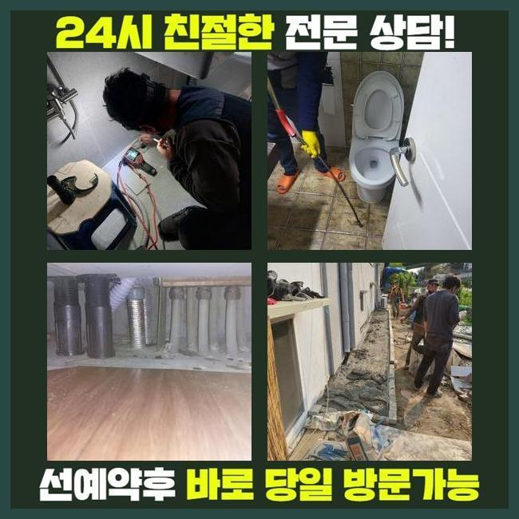
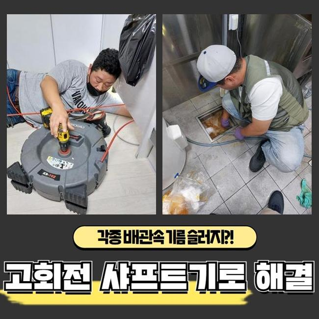
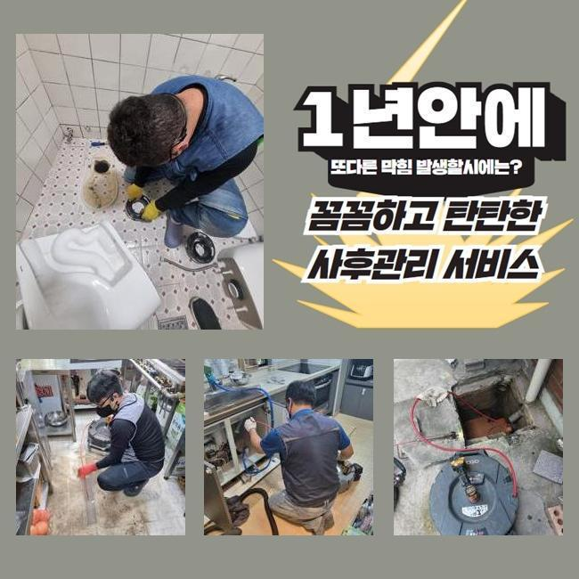
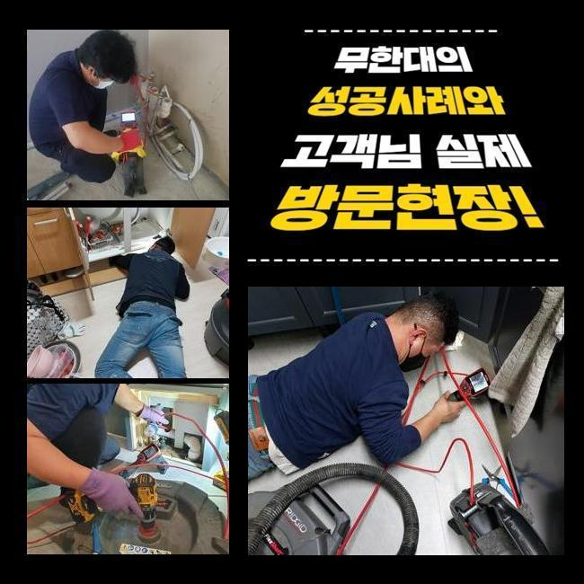
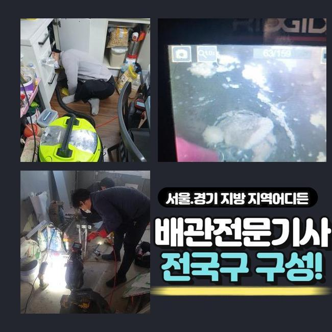
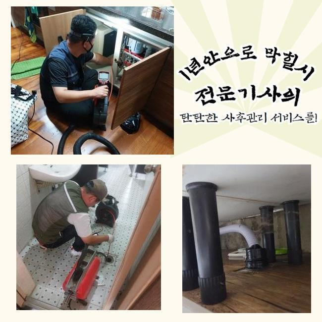
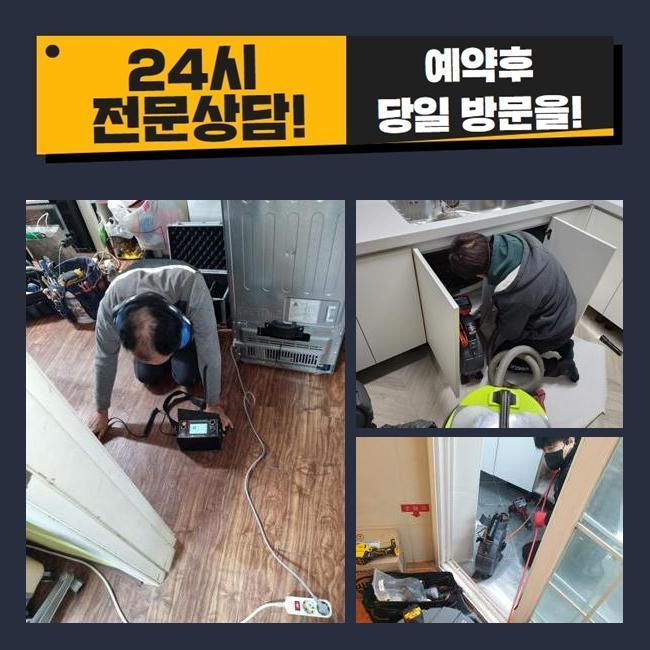

🏠 부평구 청천동세탁실막힘 일신동 하수구뚫는비용 누수탐지
인천 부평구 하수구막힘 전문 시공 후기

📋 작업 개요
- 위치: 인천 부평구, 부평구, 인천
- 서비스 유형: 하수구막힘, 배관막힘, 누수수리, 뚫는업체, 배관청소, 고압세척, 배관보수
- 작업 일시: 2024. 12. 28. 17:47
- 업체명: 하수구수사대 (010-5615-2118)
🔍 문제 상황
부평구 청천동세탁실막힘 일신동 하수구뚫는비용 누수탐지
상업적인 건물 내부에서 하수구의 고장이 나타났다는 것을 듣고 보완을 해드리고자 막힘이 생긴 곳으로 가봤습니다
여러 세대가 모인 건물이면 각 방마다 달려있는 배관이 메인배관에서 합쳐지는 설비 구조를 갖춘 장소들이 많습니다
일부 배수로 안에서 결함이 탄생했다고 해도 빠르게 막힘이 전이돼서 여러 사람들이 불편함을 감당해야 할 수 있습니다
오늘 이야기할 하수구 설치장소는 많은 점포들이 운영되고 있던 상가건물이었는데 불현듯 하수구 중단 이슈가 터져서 영업을 할 수 없어서 경제적인 손실까지도 앓고 계셨습니다
이렇게 거대한 건물에서 하수구 고장이 하루가 멀다하고 나타나면 건물 이용자들에게 심각한 고충을 선사할 수 있는 사안이니 의뢰받는 즉시로 고객님을 찾아뵙고 있습니다
도착 후에는 손상이 제일 극심한 장소로 가서 통수 검사를 해보았는데요
통수테스트는 하수를 수압이 강하게 내린 다음 관로 속으로 내려보낸 물이 어떠한 속도로 빠져나가나 체크하는 단계입니다
수돗물의 액체가 나아가는 속도가 슬로우모션이 걸린 듯 느렸으며 아예 막힘이 마비되는 순간이 빚어지는 중이라는 점을 눈으로 확인할 수 있었네요
여러가지 하수관의 고장건이 일어난 것은 관로 내부에 생각보다 많은 오염원인들이 자리하고 있을 상황임을 예측할 수 있는데요

🔎 원인 분석
💡 전문가 진단: 정밀 진단 장비를 사용하여 슬러지의 고착 여부를 판명하고 타격/세척 작업을 실시했습니다.
이런 슬러지를 재빠르게 삭제시키지 못한다면 주변 공간까지도 손상이 널리 번져나갈 수 있으니 작업의 진행도를 올렸어요
하수구 고장의 주범을 꼽자면 배관 직경을 메운 찌꺼기가 유력하므로 다 체크해서 정화를 해줘야 제기능으로 돌아갑니다
물을 이용하다보면 어느정도의 찌꺼기들은 형성되는데 물과 혼합된 채 옥외로 향하는 과정마다 특정 영역에서 붙어버려서 심각한 장애물으로 전락합니다
의도적으로 고형화된 물질들을 던져넣는 것이 아닐지라도 생활용수 속의 석회물질 미네랄 등이 고체가 될 수 있습니다
관로 내측을 관찰해보니 유분막과 머리카락처럼 물살에 딸려간 이상물질들이 잔뜩 뒤섞인 채 머무르고 있었어요
조금씩 부피를 불려나가다가 장기화되면서 틈도 없이 붙어버리면 수습이 힘든 골칫거리가 됩니다
물이 조금도 빠져나가지 못하게 막으면 더러운 물의 역행까지 피할 길이 없을 까다로운 상황이 됩니다
물 속에서 고여있다보면 더 빠르게 썩어나갈 환경을 조성하는 것과 같은데 이 물질이 풍겨대는 냄새가 같이 올라와서 고정적인 집냄새가 되어버립니다
보통 하수가 이동하는 배관은 습도가 매우 높게 유지되니 위생도 더 나빠지는데다 냄새분자가 확 퍼져버려요
찌꺼기가 생긴 쪽이 여러 곳일 때가 있으니 빠트리지 않고 골라내야 합니다
짧은 하수구 구간상의 오류라면 석션기의 작동을 통해서도 쉽게 통수를 만들 수 있는데요

🔧 작업 과정
구석이 많은 구조라거나 연결 구간이 많다보면 물살이 방해받는 구간들이 많이 생성되어 있을 수 있습니다
배관이 가진 속성이나 내부 오염물질의 규모를 관측 후 결과를 내야 합니다
물을 열심히 내려봐도 물의 흐름이 재생되지 못하면 이물질이 견고화가 됐거나 고착물질이 됐을 수 있습니다
간단한 사안을 훌쩍 넘은 막힘을 타개하고자 한다면 근원적인 막힘요인을 찾아서 세척하는 과정에 착수해야 할 것입니다
방해물의 강직도와 같은 상황에 대한 변별력이 있어야만 시공 절차를 설정할 수 있습니다
배관에 넣는 내시경은 바닥 아래 자리한 배관까지도 밝게 관로 안을 보여주는 활용도가 좋은 관측장치로 해당 침전물의 정보에 대해 파악할 수 있게 합니다
시공 중에 카메라를 써서 조사를 해보면 작업이 놓치는 구간은 없는지 짚고 넘어갈 수 있다보니 하수구 안을 더 맑게 만들 수 있습니다
처음 도착해서 해당 배관의 모양을 가늠하기 위해서 혹은 앞선 작업이 깔끔히 끝났는지 확실히 알아보려는 목적이 있으니 매현장마다 작동시킵니다
관로 전반을 검토해보았더니 굵은 중앙배관은 물론이고 넓은 범주에 걸쳐서 오물이 눌러붙어 있는 상황임을 몸소 깨닫게 되었습니다
실내는 진동의 힘을 갖춘 전동스프링이나 샤프트를 써서 이물질들을 자잘하게 절단시켜서 문제를 풀어나갈 수도 있는데요
옥외 시설물이나 연결 부위에 길게 펼쳐진 영역에 침전물들이 쭉 말라붙어있다면 극적인 개선을 마주하는 건 힘듭니다
넓다보니 그만큼 미네랄 석회물질도 많이 통과하다보니 석션에 달린 집수통의 용량으로는 수습자체도 정말 힘들 것입니다
커다란 배수로를 청소할 때는 타겟팅해서 강하게 물을 발사하는 고압세척기로 진행하는 기법을 권장하고 싶습니다
이 기법은 배관의 직경에 딱 맞는 노즐을 장착하여 물을 발사하는 기술이 있는 도구로 강력한 오물까지 싹 제거됩니다
오염이 깊었던 배관들은 노후됐다면 더 약해지므로 현장에 적합한 세기를 신중하게 결정하고 있습니다
보수에 돌입하기 이전에 배관의 상세 컨디션도 예리하게 보고서 하수구 세척에 뛰어듭니다
구역마다 세기를 바꿔가면서 배관 청결 작업을 꾸준하게 임하면서 통수장애를 만들 정도로 배관 속을 위협하던 침전물들을 남김 없이 제거하는 데 성공했습니다


✅ 작업 완료
끝으로 관로의 작은 입자까지도 자취를 감췄는지 다시 체크를 하면 성능을 회복시키는 모든 단계가 끝납니다
수돗물이 정상 방향으로 내려가나 배수 검사까지 도맡아드리고는 그밖의 의문점이 있다면 소상히 알려드리고 있습니다
관로의 겉과 속을 확인하고 통수가 되돌아왔는지 야무지게 체크해 드립니다
여러 하수도 장비들로 속 시원하실 수 있도록 하수구 설비에 생긴 곤란함을 처리해 드린다고 약속드립니다
건물 내의 하수구에 관련한 필요하신 게 있으시다면 연락을 편하게 걸어주세요




⚠️ 베란다 누수 및 방수 관리 방법
- ✅ 비가 많이 올 때 창틀 주변이나 아래층 천장에 얼룩이 생기는지 정기적으로 확인해 보세요.
- ✅ 우수관 주변 실리콘 마감이 들뜨거나 깨진 틈새가 있는지 손상 여부를 수시로 체크하세요.
- ✅ 베란다 바닥 타일의 줄눈(메지)이 소실되면 그 틈으로 물이 침투하여 누수가 유발됩니다.
- ✅ 누수 의심 증상 발견 시 방치하면 아래층 손실이 커지므로 즉시 전문가의 진단을 받으십시오.
💡 핵심 정리
- 확실한 장비 작업(내시경 점검 및 샤프트 스케일링)으로 원인을 뿌리 뽑습니다.
- 작업 후 1년 이내에 동일한 부위 재발 시 100% 무상 A/S 서비스를 보장합니다.
- 서울 · 경기 · 인천 전 지역에 24시간 언제든 긴급 출동할 수 있도록 항시 대기 중입니다.
❓ 자주 묻는 질문 (FAQ)
🚨 인천 부평구 하수구막힘 문제로 고민이신가요?
정확한 원인 진단과 확실한 시공으로 재발 없는 해결을 약속드립니다.
24시간 긴급 출동 | 서울 · 경기 · 인천 전지역 | 1년 내 재발 시 무상 A/S